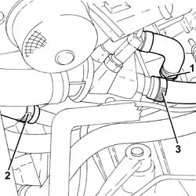
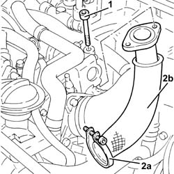
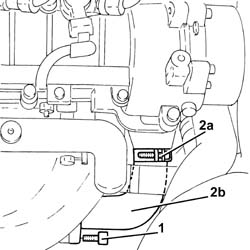
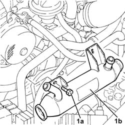
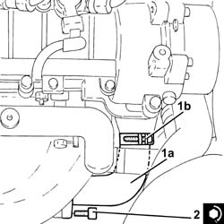
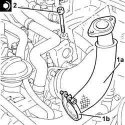

1080C80 exhaust gas water heat exchanger for egr valve r r
- Path
- Procedures > 10 ENGINE > 1080 EXHAUST EMISSION CONTROL SYSTEM > 1080C exhaust gas recirculation system (e.g.r.) > 1080C80 exhaust gas water heat exchanger for egr valve r r
- Kind
- repair procedure (removal / refitting; the operation number is the code)
- Applies to
- engines: 1.9 JTD 16V; all production periods
- Interactive page
- https://sloeber94.github.io/elrnDB-a147/en/#/3025094
Applies to: engines: 1.9 JTD 16V; all production periods
 Removing
Removing
 Refitting
RefittingPosition the vehicle on the ramp
Proceed with removal 1016A10 sound-proofing cover - r + r .
Proceed with removal 5530B10 battery - r+r .
Proceed with removal 5530B52 Battery DRIP TRAY/SUPPORT - R.R. .
Proceed with removal 7055B54 under-engine guard - r r .
1. Loosen the band and disconnect the coolant supply to from the water/exhaust gas heat exchanger for the E.G.R. system, heat exchanger side.
2. Loosen the band and disconnect the coolant outlet pipe from the water/exhaust gas heat exchanger for the E.G.R. system, heat exchanger side.
3. Loosen the band and disconnect the coolant return pipe to the climate control heater, thermostat side.

Applies to: engines: 1.9 JTD 16V; all production periods
1. Undo the bolts fixing the exhaust gas outlet pipe to the water/exhaust gas heat exchanger for the E.G.R. system, E.G.R. system solenoid valve side.
2. Loosen the band (2a) and remove the exhaust gas outlet pipe from the E.G.R. system water/exhaust gas heat exchanger (2b).

Applies to: engines: 1.9 JTD 16V; all production periods
1. Undo the bolts fixing the exhaust gas inlet pipe to the water/exhaust gas heat exchanger for the E.G.R. system, exhaust manifold side.
2. Loosen the band (2a) and remove the E.G.R. system water/exhaust gas heat exchanger exhaust gas inlet pipe (2b).

Applies to: engines: 1.9 JTD 16V; all production periods
1. Undo the bolts (1a) and remove the E.G.R. system water/exhaust gas heat exchanger (1b).

Applies to: engines: 1.9 JTD 16V; all production periods
Refitting
RemovingRefit the EGR system water/exhaust valve heat exchanger in its seating and secure it to the cylinder head using the bolts.
1. Place the E.G.R. system water/exhaust gas heat exchanger exhaust gas inlet pipe (1a) back in its housing and tighten the band (1b).
2. Tighten the bolts fixing the exhaust gas inlet pipe to the water/exhaust gas heat exchanger for the E.G.R. system, exhaust manifold side to the recommended torque.
 | Fastening | Component | Ø | Value (daNm) |
|---|---|---|---|---|
2 | Bolt | WATER/GAS HEAT EXCHANGER FOR EGR SYSTEM | M8 | (Exhaust manifold side 23 28 |

Applies to: engines: 1.9 JTD 16V; all production periods
1. Place the E.G.R. system water/exhaust gas heat exchanger exhaust gas outlet pipe (1a) back in its housing and tighten the band (1b).
2. Tighten the bolts fixing the exhaust gas outlet pipe to the water/exhaust gas heat exchanger for the E.G.R. system, E.G.R. system solenoid valve side to the recommended torque.
| Fastening | Component | Ø | Value (daNm) |
|---|---|---|---|---|
2 | Bolt | WATER/GAS HEAT EXCHANGER FOR EGR SYSTEM | M8 | (E.G.R.) solenoid valve side 2.3 ÷ 2.8 |

Applies to: engines: 1.9 JTD 16V; all production periods
Connect the engine coolant return pipe from the climate control system heater, thermostat side, and tighten the band.
Connect the coolant outlet pipe from the E.G.R. water/exhaust gas heat exchanger, heat exchanger side, and tighten the band.
Connect the engine coolant supply pipe to the EGR system water/exhaust gas heat exchanger, heat exchanger side and tighten the band.
Proceed with refitting 7055B54 under-engine guard - r r .
Proceed with refitting 5530B52 Battery DRIP TRAY/SUPPORT - R.R. .
Proceed with refitting 5530B10 battery - r+r .
Refill the engine cooling system with coolant 0010T20 coolant change .
Proceed with refitting 1016A10 sound-proofing cover - r + r .
Remove the car from the ramps.